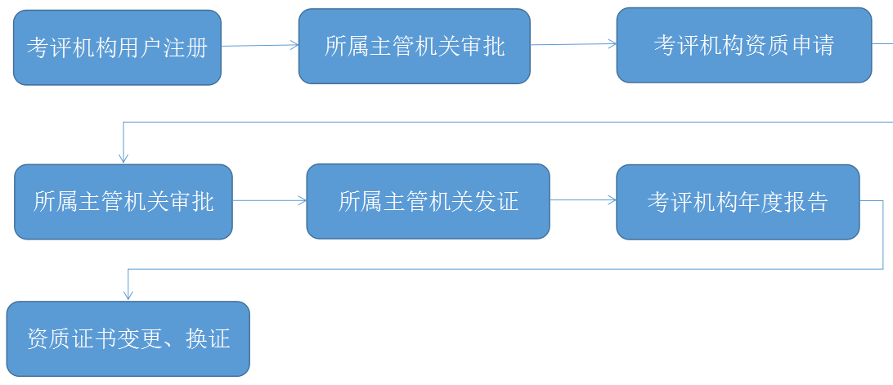
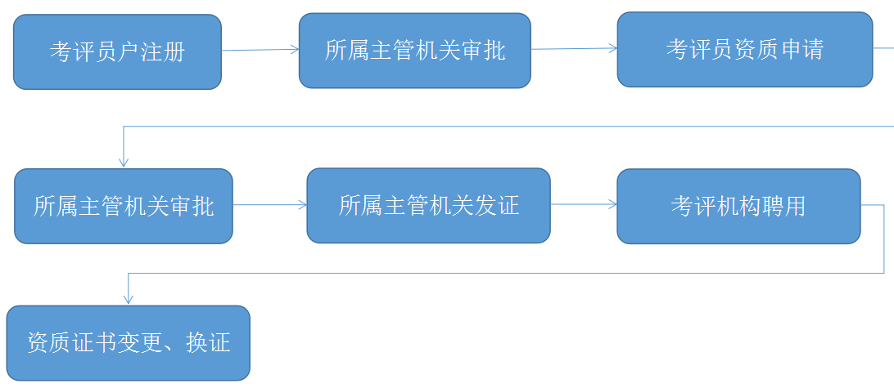
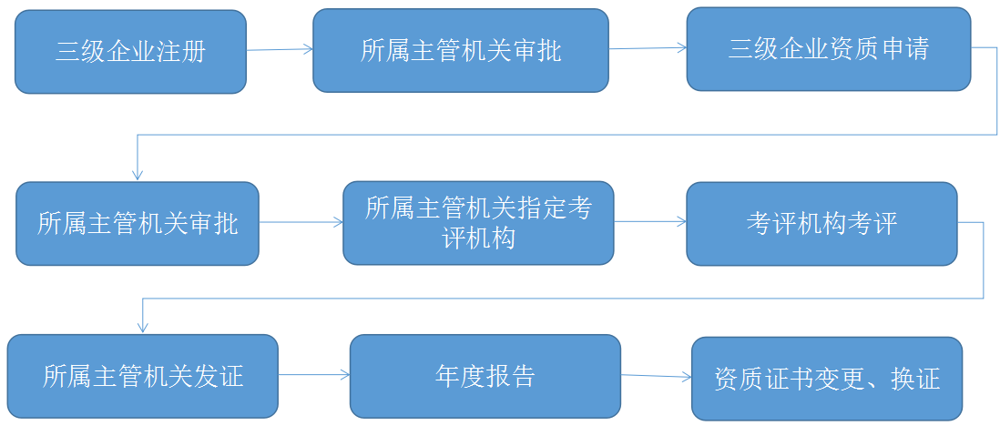
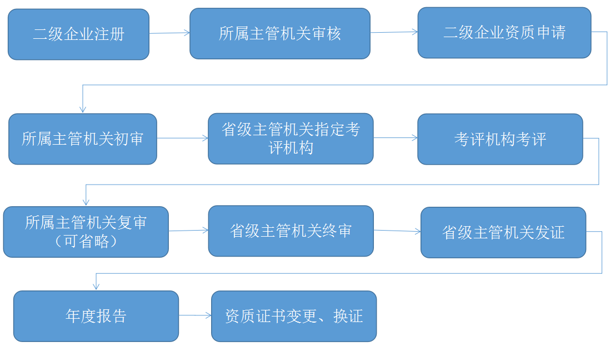
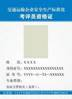
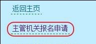
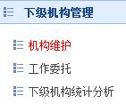
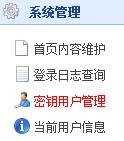
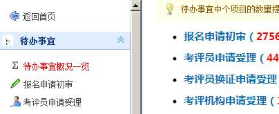
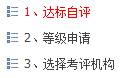

交通运输企业安全生产标准化
管理系统使用帮助
近年以来，党中央、国务院越来越重视安全生产工作。国发〔2010〕23号、〔2011〕40号文件各地、各部门进一步加强企业安全生产工作，积极开展企业安全生产标准化建设。按照《关于深入开展企业安全生产标准化建设的指导意见》(安委〔2011〕4号)部署，2011年6月交通运输部印发了《交通运输企业安全生产标准化建设实施方案》（交安监发〔2011〕322号），2013年1月印发了《交通运输部关于进一步加强安全生产工作的意见》（交安监发〔2013〕1号），要求从事客运、危险化学品等重点交通运输企业在2013年底前达标，其他交通运输企业在2015年前达标。
交通运输企业安全生产标准化建设工作涉及公路、水路交通运输、城市客运、工程建设、汽车维修等各类企业。企业数量巨大，规模不一、业务繁杂，数据重要且量大。为强化达标工作管理、科学规范考核流程和评级工作、提高考核评级效率、切实有效减轻企业负担，交通运输部建设完成了交通运输企业安全生产标准化管理系统，以信息化为手段，实现了企业安全生产标准建设工作的申报、考评、管理等工作的无纸化。该系统具有以下主要特点和功能：
一、高效便捷。实现交通运输企业安全生产标准化建设工作信息化，除现场考评实现部分信息化外，主管机关、考评机构、企业和考评员等用户的所有申报、审批等环节均全部通过网络实现，信息实时提交，及时处理。并实现无纸化运作，减少了各类用户报名、打印、申报、通讯、邮寄以及差旅等负担。
二、公开公平。信息化手段的引入，实现了信息的公开和透明，减少了人为干预的环节。系统所有有效操作均通过数字认证进行记录，部分环节使用数字签名，便于各方监督和责任追究，使得企业安全生产标准化各项工作更加公开、公平、公正。
三、安全稳定。本系统数据事关全国企业安全生产标准化建设工作的正常有序开展，事关企业、考评机构和考评员个人的重要信息，安全性能要求较高。经过可行性研究和专家评审，系统按照国家信息安全等级保护二级标准建设，所有用户均需使用数字认证登录，并采用双热机备份，确保了系统的安全、稳定和可靠。
主管机关流程:
考评机构流程:

考评员流程:

三级企业流程:

二级企业流程:

用户分4类，请明确自身用户类型并进行相应操作：
|
用户类型 |
操作 |
|
主管机关用户 |
请点击主页上的 |
|
企业用户 |
请点击主页上的 |
|
考评机构用户 |
请点击主页上的 |
|
考评员 |
请点击主页上的 |
本文提到的证书分两种：
|
证书类型 |
说明 |
|
标准化证书 |
主管机关颁发的打印或印刷出来的纸质证书，用于证明考评员/考评机构/企业所获得的标准化资质/资格/等级。  |
各类用户操作流程如下：
|
步骤 |
说明 |
|
第一步 |
点击首页“主管机关用户登录”/“主管机关报名申请”进行内容填报：  填报提交后等待审批，使用组织机构代码和联系人姓名可以从上述连接进入查询进度，看到通过后可进行正常登录。 |
|
第二步 |
进行如下系统设置：   |
|
第三步 |
处理考评员、考评机构、企业的报名申请等待办事宜：  |
|
第四步 |
其他任务及功能，详见系统菜单 |
|
步骤 |
说明 |
|
第一步 |
点击首页“企业用户登录”/“企业报名申请”进行内容填报：
填报提交后等待审批，使用组织机构代码和联系人姓名可以从上述连接进入查询进度，看到通过后可正常登录。 |
|
第二步 |
输入密码登录进入系统。 |
|
第三步 |
进行交通运输企业安全生产标准化等级证书申请，依次点击如下三项进行内容填报：  注：可反复操作进行多个业务类型多个级别的等级证书申请 |
|
第四步 |
企业年度报告、企业证书到期换证考评申请 |
|
步骤 |
说明 |
|
第一步 |
点击首页“考评机构用户登录”/“考评机构报名申请”进行内容填报：
填报提交后等待审批，使用组织机构代码和联系人姓名可以从上述连接进入查询进度，看到通过后可进行正常登录。 |
|
第二步 |
输入密码登录进入系统。 |
|
第三步 |
进行考评资质等级证书申请，点击如下按钮进行申请内容填报：
注：可反复操作进行多个业务类型多个级别的资质证书申请 |
|
第四步 |
获取考评资质证书后，可处理主管机关分派的企业考评工作。 |
|
步骤 |
说明 |
|
第一步 |
点击首页“考评员登录”/“考评员报名申请”进行内容填报：
填报提交后等待审批，使用姓名和身份证号码可以从上述连接进入查询进度，看到通过后可进行正常登录。U盘购买。 |
|
第二步 |
输入密码登录进入系统。 |
|
第三步 |
进行考评员资格证书申请，点击如下按钮进行申请内容填报：
注：可反复操作进行最多两个业务类型的资格证书申请 |
用户首次登录系统前，请先进行报名申请，申请过程为两步：
1、用户提交初次报名信息，并通过主管机关初审；
2、初审通过后，开始申请证书
考评员、考评机构用户、企业用户通过注册审批后，可进入系统申请交通运输企业安全生产标准化证书：
l 考评员：申请标准化资格证书（分业务类型）
l 考评机构：申请标准化资质证书（分业务类型，分一/二/三级）
l 企业：申请标准化等级证书（分业务类别，分一/二/三级）
注：要申请多种业务类型/类别的，请分别提交多次申请，填写申请时上次填写的大部分信息会自动显示，不用重复录入。
l 问题：有支持电话及QQ群吗？
回答：关于系统使用支持电话为188-0109-6331和185-1186-1449；
QQ群号码为62661231
l 问题：如何给地市级主管机关分配权限？
回答：需要操作如下步骤，一、在左边菜单“下级机构管理”/“机构维护”下点击“新增下级主管机关”，建立地市级主管机关（代码及名称，*不要*增加省级主管机关）；二、在左边菜单“系统管理”/“密钥用户管理”下点“查看”某个主管机关用户，调整主管机关到该用户自己的主管机关；三、回到左边菜单“下级机构管理”/“工作委托”下点击查看某个主管机关，调整其权限。